Haskell与范畴论
用haskell的概念解释范畴论。翻译自 wikibook : http://en.wikibooks.org/wiki/Haskell/Category_theory
目录
本文对范畴论做一个简单的介绍，最终目的是为了将它应用到Haskell语言。为了达到这个目的，我们一边介绍数学上的定义，一边给出对应的Haskell代码。我们不追求这个对应有多精确，只期望读者在读完以后，能对范畴论的基本概念及其跟Haskell之间的联系有一个直观的感受。
范畴论简介

一个简单的范畴，由三个对象 A, B 和 C 组成，有三个单位态射 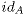, 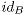 和  ，还有另外两个态射 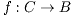 和 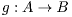 。第三个组成元素（即如何对态射进行组合）没有展示出来。
，还有另外两个态射 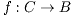 和 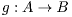 。第三个组成元素（即如何对态射进行组合）没有展示出来。
本质上讲，范畴由三部分组成：
- 一组 对象
- 一组 态射 。每个态射捆绑两个对象（一个源对象，一个目标对象）。（也有人把它们叫做箭头，我们这里不这么叫它，因为这个词语在Haskell里面有其他含义。译注：其他含义指的是 Control.Arrow 。）如果 f 是一个从源对象 A 到目标对象 B 的态射，我们把它记作
 。
。 - 一个称为 态射组合 的概念。如果 h 是态射 f 和 g 的组合，我们记作： 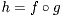 。
许多事物都构成范畴。比如全部的集合就构成范畴 Set ，函数（译注：这里说的函数是指集合论中的函数）是它的态射，态射的组合就是函数的组合。全部的群也构成范畴 Grp ，保持群结构的函数就是它的态射（群同态），比如任意两个群 G 和 H ， G 的操作符为 ， H 的操作符是 ，那么函数 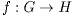 只要满足如下条件就是一个态射：
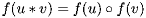乍看之下似乎所有态射都是函数，实际上不一定，比如下面这个例子，任何偏序结构 (P, 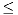 ) 都构成范畴， P 中的元素就是该范畴的对象，任意两个元素 a 和 b 只要满足 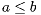 ，那么 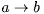 就是一个态射。另外，在相同的源对象和目的对象之间可以存在多个态射。我们拿 Set 范畴为例， 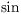 和 都是从 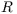 到 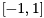 的函数，但是他们是不同的态射。
范畴公理
范畴需要满足三个公理。第一个就是态射的组合操作要满足结合律。记作：
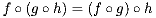第二，态射在组合操作下是闭合的。所以如果存在态射 和 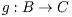 ，那么范畴中必定存在态射 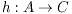 使得 。以下面这个范畴为例：
f 和 g 都是态射，所以我们一定能够对他们进行组合并得到范畴中的另一个态射。那么哪一个是态射  呢？唯一的选择就是 了。类似地， 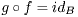 。
呢？唯一的选择就是 了。类似地， 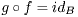 。
第三个公理，对任何一个范畴 C ，其中任何一个对象 A 一定存在一个单位态射， 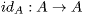 。这个态射是组合操作的单位元。
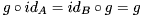Hask ，Haskell范畴
本文重点关注一个叫 Hask 的范畴，该范畴由Haskell中所有类型组成，Haskell的函数就是它的态射， (.) 操作符便是态射组合，函数 f::A->B 就是 Hask 中从类型 A 到类型 B 的态射。第一和第三公理很容易验证通过，因为 (.) 操作符本身就是满足结合律的函数，而且很显然，对于任何函数 f 和 g ， f.g 仍然是一个函数。在 Hask 中，单位态射就是函数 id ，而且显然也满足第三公理：
id . f = f . id = f
函子

这是从范畴 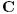 到范畴 的函子。图中的文字描述了对象 A 和 B 被转换到了范畴 D 中同一个对象，因此，态射 g 就被转换成了一个源对象和目标对象相同的态射（不一定是单位态射），而且 和 变成了相同的态射。对象之间的转换是用浅黄色的虚线箭头表示，态射之间的转换是用浅绿色的箭头表示。
OK，我们已经介绍了一些范畴，这些范畴里面都有些对象，还有一些态射能神奇地把对象关联在一起。下面我们要介绍一个范畴论中相当重要的概念，那就是 函子 ，它甚至能把两个范畴关联在一起。函子本质上说其实就是范畴之间的转换。比如对于范畴 C 和 D ，函子 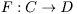 能够：
- 将 C 中任意对象 a 转换为 D 中的 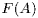
- 将 C 中的态射 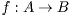 转换为 D 中的 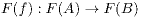
“健忘”函子就是典型的一个函子： 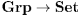 ，它能将群转换成它底层的集合，并将群的态射转换成集合上的相同行为的函数。另一个例子就是幂集函子： 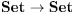 ，它能将集合转换成他们的幂集，并将函数 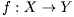 转换成函数 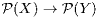 ，后面这个函数接收所有  组成的集合（译注：也就是集合 X 的幂集），将它转换成 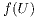 ，其中
组成的集合（译注：也就是集合 X 的幂集），将它转换成 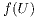 ，其中  。对所有的范畴 C 都可以定义一个所谓的单位函子，也叫做 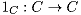 ，它将对象和态射直接转换成它们自己。在后面要讲的 monad公理和他们的重要性 一节中，我们将会看到单位函子的作用。
。对所有的范畴 C 都可以定义一个所谓的单位函子，也叫做 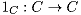 ，它将对象和态射直接转换成它们自己。在后面要讲的 monad公理和他们的重要性 一节中，我们将会看到单位函子的作用。
同样的，函子也需要遵守一些公理。第一，给定一个对象 A 上的单位态射 ， 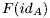 必须也是 上的单位态射，也就是说：
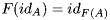第二，函子在态射组合上必须满足分配率，也就是说：
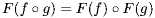Hask 上的函子
也许你已经看出来了， typeclass Functor 确实和范畴论中的函子概念关系紧密。函子包括两部分：首先它将一个范畴中的对象转换成另一个范畴中的对象，其次它还将一个范畴中的态射转换成另一个范畴中的态射。Haskell中的 Functor 其实是把 Hask 转换到 Hask 子范畴 Func 的函子，范畴 Func 是定义在该 Functor 的类型之上的一个范畴。比如函子 list 是从范畴 Hask 转换到范畴 Lst ，范畴 Lst 只包含一个类型 list ，换句话说函子 list 能将任意类型 T 转换为 [T] 。范畴 Lst 中的态射就是定义在 list 类型上的函数，即： [T]->[U] 。那么所有这些东西又如何跟Haskell的 Functor typeclass 联系在一起呢？我们回忆一下 Functor 的定义：
class Functor (f :: * -> *) where
fmap :: (a -> b) -> (f a -> f b)
我们再定义一个实例：
instance Functor Maybe where
fmap f (Just x) = Just (f x)
fmap _ Nothing = Nothing
关键点来了：类型构造器 Maybe 将任意类型 T 转换成新类型 Maybe T ，同时定义在 Maybe 上的 fmap 能将函数 a->b 转换为函数 Maybe a->Maybe b 。这样，我们就已经把函子的两个组成部分都定义了，将 Hask 中的对象转换到另一个范畴中的对象，并将 Hask 中的态射转换到该范畴的态射。所以 Maybe 是一个函子。
对于Haskell的 Functor 一个直观的感觉就是，他们代表了一类可以被map的类型。它可以是 list 或是 Maybe ，也可以是树这样复杂的结构。利用它我们可以编写一个执行实际map操作的函数，和 fmap 组合起来，然后就可以传递任意 Functor 结构给它。比如你可以写一个通用函数可以取代 Data.List.map ， Data.Map.map ， Data.Array.IArray.amap ，等等。
我们继续来看函子公理，多态函数 id 可以替代任意的 ，所以第一条公理是满足的：
fmap id = id
直观地看，这句代码的含义是说map一个结构，然后对其中每一个元素啥也不做，和从一开始就啥也不做是等价的。
第二，因为态射组合就是 (.) ，那么：
fmap (f . g) = fmap f . fmap g
这条公理还挺实用。这里我们可以把函子想象成类似 list 这样的容器，等号右边就是一个要遍历容器两遍的算法：首先map这个容器，对其中元素执行函数 g ，产生一个新容器，然后map该新容器，执行 f 。而这条公理告诉我们，这个算法可以换成一个只需遍历一遍的算法，并对其中每一个元素执行 f . g 。这个过程叫做 fusion 。
将范畴论的概念对应到Haskell
现在我们来总结一下范畴论的概念要如何转换到Haskell上面，这方面 Functor 提供了一个很好的例子。关键在于记住以下几点：
- 我们只探讨 Hask 范畴和它的子范畴
- 范畴的对象就是Haskell的类型
- 范畴的态射就是Haskell的函数
- 那些接受类型作为参数并返回另一个类型的东西叫类型构造子
- 那些接受函数作为参数并返回另一个函数的东西叫高阶函数
- typeclass 以及它们提供的多态特性，正好反映了这样一个事实，那就是在范畴论中，其实很多概念都是在一组对象上定义的。
Monads

unit 和 join ，对monad中每一个对象都必须存在的两个态射
Monad是Haskell中一个相当重要的概念，实际上，它们最开始就是来自范畴论。monad 是一类特别的函子，它们拥有一些独特的结构。monad都是从一个范畴映射到其自身的函子。下面我们来看详细定义，Monad是一个函子 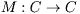 ，并且对于 C 中每一个对象 x 都存在如下两个态射：
- 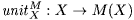
- 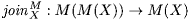
在随后的讨论中，只要不产生混淆，我们就去掉上标 M ，只说 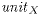 和  。
。
现在我们来看看它是如何对应到Haskell的typeclass Monad 上的：
class Functor m => Monad m where
return :: a -> m a
(>>=) :: m a -> (a -> m b) -> m b
类型约束 Functor m 可以确保我们已经拥有了函子结构：即对象和态射的一组转换关系。 return 就是对应的 。不过下面我们就遇到问题了，虽然 return 的类型酷似 unit ，但 (>>=) 的类型却很难跟 join 联系起来。反而下面这样的函数： join :: Monad m => m (m a) -> m a 看起来倒是跟 join 挺像的。实际上它们之间是可以互相转换的：
join :: Monad m => m (m a) -> m a
join x = x >>= id
(>>=) :: Monad m => m a -> (a -> m b) -> m b
x >>= f = join (fmap f x)
所以给出 return 和 join 和给出 return 和 >>= 是等价的。只不过在范畴论中通常用 unit 和 join 来定义monad，而Haskell程序员则更喜欢用 return 和 (>>=) _[3] 。范畴论的方式通常要更合理一点，因为对于一个结构 M 来说，如果存在一种自然的方式将任意对象 X 转换为 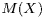 ，并能将 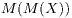 转换为 ，那么该结构很可能就是一个monad。这一点可以从下面的示例中看出。
示例：幂集函子同时也是monad
前面描述过的幂集函子 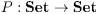 可以形成一个monad。对每一个集合 S 都有 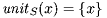 ，将其中 S 的每一个元素映射到只含有该元素的一个集合。注意到这些只有一个元素的集合都是 S 的子集，所以 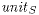 返回的正是 S 的幂集中的元素，这样就满足了 monad 对 unit 的要求。我们再来定义函数 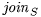 ，输入为 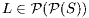 ，它是：
- S 的幂集的幂集的元素.
- 即 S 所有子集组成的集合的所有子集组成的集合的元素 .
- 即 S 的部分子集组成的集合
然后我们返回这些集合的并集, 这样就得到了 S 的另一个子集（译注：即  的一个元素，也即成功地从 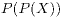 映射到了 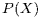 ），公式如下。
的一个元素，也即成功地从 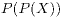 映射到了 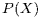 ），公式如下。
由此可见 P 确实是一个 monad 。
其实 P 跟 `list` 几乎是等价的；除了后者处理的是列表而前者是集合，他们在其他地方基本一致。见表：
| 集合上的幂集函子 | Haskell中的List Monad | ||
|---|---|---|---|
| 类型 | 定义 | 类型 | 定义 |
| 给定集合 S 和态射 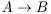 ： | 给定类型 T 和函数 f :: A -> B | ||
| 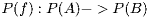 | fmap f :: [A] -> [B] | fmap f xs = [ f a | a <- xs ] | |
| return :: T -> [T] | return x = [x] | ||
| join :: [[T]] -> [T] | join xs = concat xs | ||
monad公理和他们的重要性
正如函子需要满足函子的公理，monad也有他们的公理要去满足。我们先把这些公理简单列举一下，并转换成haskell代码，最后再来探讨这些公理的重要性。
给定一个monad  和态射 其中 ，有公理如下：
和态射 其中 ，有公理如下：
现在，大家应该可以很自然地把他们转换成下面这样的haskell代码了吧:
- join . fmap join = join . join
- join . fmap return = join . return = id
- return . f = fmap f . return
- join . fmap (fmap f) = fmap f . join
(记住，fmap是函子定义中负责转换态射的那一部分。)乍看起来，这些公理似乎看不出存在什么深意。这几条公理究竟有啥鸟含义，凭什么非要monad遵守这几条规定？下面便让我们来探索一二。
公理一

用 list 对公理一进行的演示. 记住在 list monad中 join 就是 concat ， fmap 就是普通的 map 。
为了方便理解这条公理，我们先用 list 作为例子。首先这条公理涉及两个函数， join . fmap join （等式左边）和 join . join (等式右边)。这两个函数的类型是什么呢？因为我们只探讨 list ，所以我们知道 join 的类型是 [[a]] -> [a] ，然后可以推出他们的类型都是： [[[a]]] -> [a] 。所以我们的参数是一个 list 的 list 的 list ，然后对这个三层 list 执行 fmap join ，然后再在返回结果上应用 join 。对 list 来说 fmap 就是我们熟悉的普通 map ，所以我们首先对最外层列表的每一个元素进行 join 操作，也就是将其中每一个元素坍缩成为单层 list 。这个时候我们就得到一个 list 的 list ，我们再在其上应用 join ，最终坍缩成为一个 list 。简单地说，我们先进入外层 list ，将第二层和第三层 list 坍缩成一层，然后再将这一层和最外层坍缩成一层。
等式右边又是怎么样一个情况呢？我们首先对我们的三层 list 进行 join ，虽然是三层 list ，但实际上 join 操作的还是两层 list ，因为 [[[a]]] 也可以当作是一个 [[b]] ，其中 b = [a] ，所以，某种意义上说，三层 list 只是内部元素也是 list 的一个两层 list 。所以如果我们将这个 list 的 list （的 list ）应用到 join ，它会将外面两层坍缩成一层，而因为第二层的元素本身还是 list ，所以我们得到的还是一个 list 的 list ，然后我们再应用一次 join ，最终坍缩成为一个 list ，总结起来就是说，等式左边是先坍缩里面两层，然后坍缩外面一层，而等式右边则是先坍缩外面两层，然后里面一层。而这条公理告诉我们，这两个操作应该是等价的。其实也有点像是在说 join 操作需要满足结合律。
Maybe 也是一个 monad，因为：
return :: a -> Maybe a
return x = Just x
join :: Maybe (Maybe a) -> Maybe a
join Nothing = Nothing
join (Just Nothing) = Nothing
join (Just (Just x)) = Just x
所以如果我们有一个三层的 Maybe 类型（举例来说，它可以是 Nothing, Just Nothing, Just (Just Nothing) or Just (Just (Just x)) ），公理一就告诉我们，先坍缩里面两层还是先坍缩外面两层是完全等价的。
公理二
我们再来看看第二条公理， 同样我们还是用 list 做例子。第二条公理提到两个函数的类型都是： [a] -> [a] 。等式左边表达的是对一个 list 进行map的函数，将每一个元素 x 转换成者有这一个元素的列表 [x]，这样我们最终就得到一个单元素列表组成的列表。然后这个两层 list 通过join函数又重新坍缩回单层 list ，右边部分，接收整个 list [x, y, z, ...]，将它转换成单元素 list [[x, y, z, ...]] ，然后又坍缩成为单层列表。这条公理的含义没那么容易一下子说清楚，不过大概就是说，当你在一个monadic值上面应用return，然后再对见过使用join另它坍缩，不管你是在外层应用return还是在内部应用return，其效果是一样的。
公理三和公理四
最后两条公理就更加不言而喻了，要展现他们的真实性最简单的方法就是将他们扩展开来：
- \x -> return (f x) = \x -> fmap f (return x)
- \x -> join (fmap (fmap f) x) = \x -> fmap f (join x)
应用到do语法
OK，前面我们已经对monad必须遵守的一些公理进行了一些直观的陈述，但是这些公理为什么如此重要？这个问题的答案当我们看到do语法的时候就清除了。我们知道do只是一个语法糖，它其实就是多个 (>>=) 操作的组合：
do { x } --> x -- test
do { let { y = v }; x } --> let y = v in do { x }
do { v <- y; x } --> y >>= \v -> do { x }
do { y; x } --> y >>= \_ -> do { x }
另外，我们其实可以通过上面提到的这些公理和 (>>=) 的定义，对 haskell 中的 monad 公理进行证明（证明过程有的地方比较复杂，如果没有兴趣也可以直接跳过）：
return x >>= f = f x 。证明：
return x >>= f= join (fmap f (return x)) -- 根据 (>>=) 的定义= join (return (f x)) -- 根据公理三= (join . return) (f x)= id (f x) -- 根据公理二= f xm >>= return = m 。证明：
m >>= return= join (fmap return m) -- 根据 (>>=) 的定义= (join . fmap return) m= id m -- 根据公理二= m(m >>= f) >>= g = m >>= (\x -> f x >>= g) 。证明（联想 fmap f . fmap g = fmap (f . g) ）：
(m >>= f) >>= g= (join (fmap f m)) >>= g -- 根据 (>>=) 的定义= join (fmap g (join (fmap f m))) -- 根据 (>>=) 的定义= (join . fmap g) (join (fmap f m))= (join . fmap g . join) (fmap f m)= (join . join . fmap (fmap g)) (fmap f m) -- 根据公理四= (join . join . fmap (fmap g) . fmap f) m= (join . join . fmap (fmap g . f)) m -- 根据函子的分配率= (join . join . fmap (\x -> fmap g (f x))) m= (join . fmap join . fmap (\x -> fmap g (f x))) m -- 根据公理一= (join . fmap (join . (\x -> fmap g (f x)))) m -- 根据函子的分配率= (join . fmap (\x -> join (fmap g (f x)))) m= (join . fmap (\x -> f x >>= g)) m -- 根据 (>>=) 的定义= join (fmap (\x -> f x >>= g) m)= m >>= (\x -> f x >>= g) -- 根据 (>>=) 的定义
这几条使用 return 和 (>>=) 的monad公理，可以翻译成如下的do语法糖：
| 无参(points-free)风格 | do语句块 |
|---|---|
| return x >>= f = f x | do { v <- return x; f v } = do { f x } |
| m >>= return = m | do { v <- m; return v } = do { m } |
| (m >>= f) >>= g = m >>= (\x -> f x >>= g) | |
现在，monad公理就变成了保证do语句块正常运转的规定了，如果有一个公理不满足，都会导致用户的困惑，因为do语句块的行为将和你期待的不一样。所以本质上说，monad公理其实是一份关于monad的可用性指南。
总结
在这一章中，我们一路走到现在，我们知道了范畴是什么，他们对应了haskell的哪些概念。我们介绍了包括函子在内的许多范畴论中的重要概念，同时还介绍了monad这样的高级话题，并且看到了他们对于haskell来说是多么的关键。我们没有介绍范畴论中其他一些基本概念，比如自然转换，因为就我们的目标来说并不需要。我们希望让你能对haskell背后的范畴论概念有一些直观的感受。
blog comments powered by Disqus
转载请注明出处，收藏或分享这篇文章到：


Website content copyright © by 黄毅. All rights reserved.